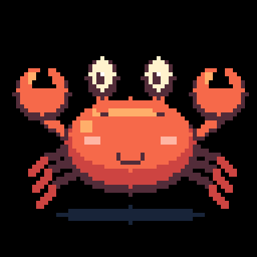

Conversations you can see
Read captions on the device. Follow live transcripts, streamed replies, stages and errors in your browser.
YOUR DEVICE. YOUR MODELS.
Hold to talk. Release to listen. Turn your StickS3 into a pocket voice companion, powered by Pi on your computer.
No Muse account or subscription · Your choice of model and speech

StickS3 + macOS + faster-whisper + Pi / DeepSeek + macOS TTS
SMALL HARDWARE. OPEN POSSIBILITIES.
The device records, animates, displays captions and plays audio. Your computer handles speech and model access. API keys stay on the computer.
Read captions on the device. Follow live transcripts, streamed replies, stages and errors in your browser.
Select configured providers and models through Pi. Cloud usage follows provider pricing; local models need your own setup.
Tune Whisper, recognition language, the installed voice and speech rate. Or switch to text-only replies.
FROM THE WORKBENCH TO YOUR POCKET
Run from the repository root. Keep the terminal open and computer awake. Run npm run build first after code changes.
cd crab/bridge
npm startOpen the address below and sign in with CRAB_TOKEN from your local crab/bridge/.env. Switch between English and Chinese in the header.
http://127.0.0.1:8787/ ↗Works on the computer running the bridge. This project website is separate from your device console.
Hold the StickS3 front button, say “你好，你是谁”, and release. Check the captions and spoken reply.
You’ll need a StickS3, USB data cable, reachable 2.4 GHz Wi-Fi, Node.js ≥ 22.19, Python 3 and ESP-IDF 6.0.1. The verified local speech setup uses macOS.
git clone https://github.com/everettjf/muse-gadget-sdk.git
cd muse-gadget-sdk/crab/bridge
npm ci --ignore-scripts
npm run build
cp -n .env.example .envGenerate a shared token, configure DeepSeek / Pi and local speech, and start with demo mode. Follow the linked setup guide for the full configuration.
Save the full 8 MiB flash and SHA256, then build and flash Crab. Configure Wi-Fi, the computer’s LAN address and the same token over USB.
Verify fixed captions and the demo tone, then set CRAB_DEMO=false and restart the bridge. Test recognition, captions and speech near the microphone.
A FEW BUTTONS. THAT’S ALL.
Up to 20 seconds per turn.
Start again once cancellation finishes.
Page through captions and trigger a happy reaction.
A WORKING FIRST VERSION
Chinese recognition, captions, voice replies, cancellation, reconnection and heartbeats have been exercised on hardware. Battery runtime, battery-only wake and long-term stability still need measurement.
Read the validation record ↗